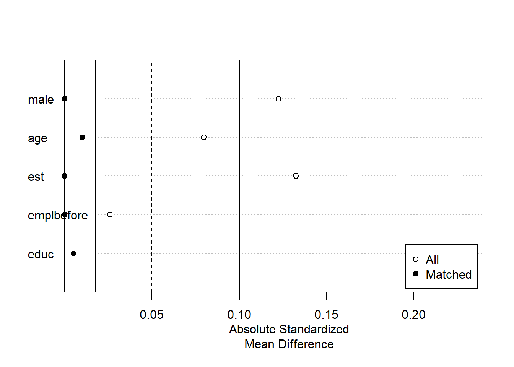
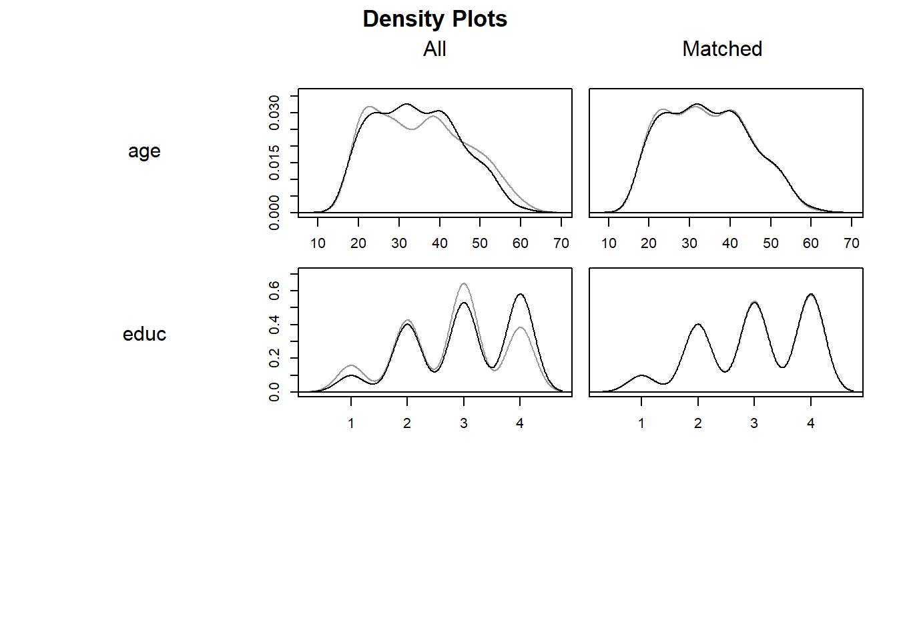
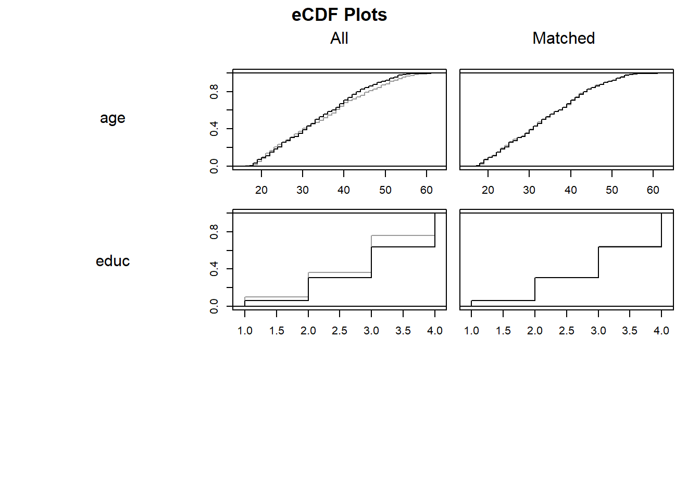
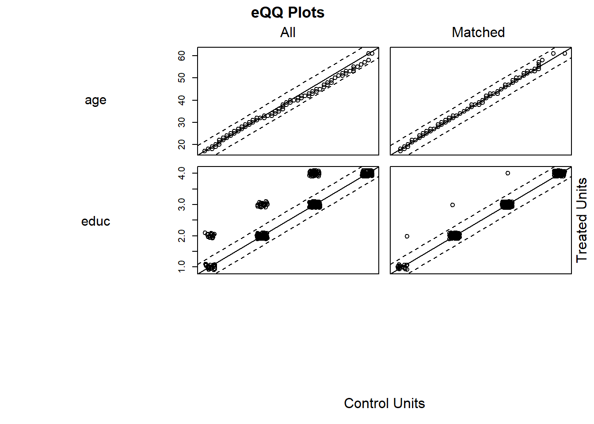
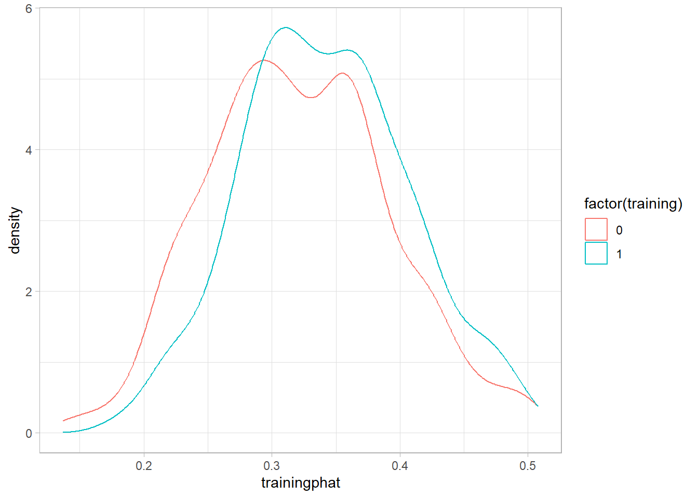
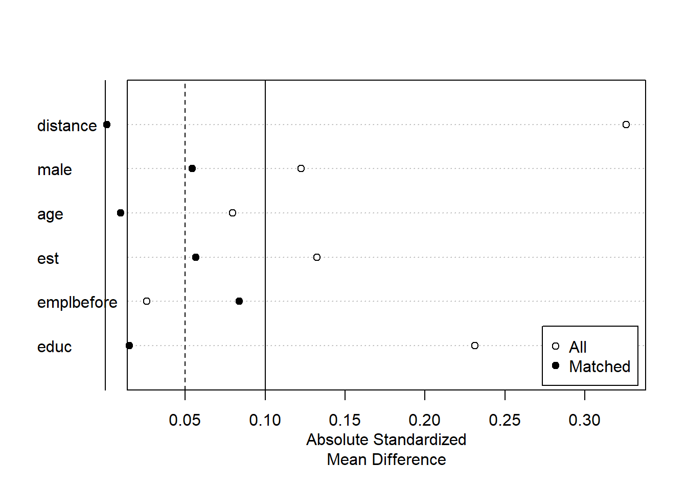
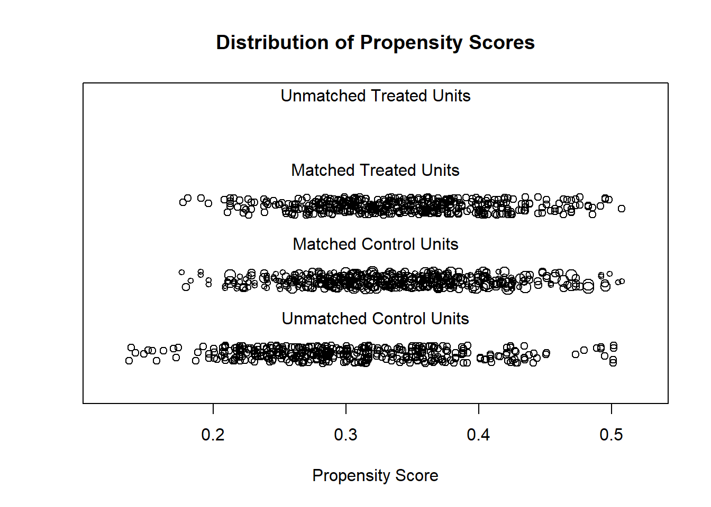

Sobitamine (matching) on vaatlusandmetel põhinev meetod põhjusliku mõju hindamiseks olukorras, kus juhuslikku katset ei ole tehtud ning osalemine programmis (tööpoliitika meede, tervishoiu sekkumine jne) sõltub inimestest endast.
Idee on lihtne: püüame iga osalusrühma inimese jaoks leida võimalikult sarnase inimese võrdlusrühmast ning võrdleme seejärel nende tulemusi.
Tuginedes potentsiaalsete tulemuste raamistikule tähistame:
\(Y_i(1)\) – isiku \(i\) tulemus, kui ta osaleb meetmes
\(Y_i(0)\) – sama isiku tulemus, kui ta ei osale
\(D_i \in \{0,1\}\) – indicator, kas isik osales (1) või mitte (0)
\(X_i4\) – vektor taustatunnuseid (vanus, sugu, haridus, eelnev töökogemus jne)
Meid huvitab näiteks keskmine mõju osalejatele (ATT):
Probleem: iga inimese puhul näeme ainult ühte tulemust, kas \(Y_i(1)\) või \(Y_i(0)\). Sobitamisega püüame iga osaleja jaoks leida sobiva “doppelgängeri” võrdlusrühmast, kellel oleks võimalikult sarnased \(X\)-id, ning kasutame tema \(Y_j(0)\) ligikaudse asendusena vaatlemata \(Y_i(0)\)-le.
kus \(\bar{Y}_{0}(i)\) on sarnaste võrdlusgrupi isikute keskmine tulemus.:contentReferenceoaicite:1
Praktiline probleem on, et kui:
tunnuseid on palju (suur mõõtmelisus) ja
valim ei ole väga suur,
siis jääb enamikul osalejatest täpset vastet leidmata. Seda nimetatakse tihti “mõõtmelisuse needuseks” – ruudustik, kuhu me andmed jaotame, muutub liiga hõredaks.
7.3 Ligikaudne sobitamine
Ligikaudse sobitamise puhul lubame väikese erinevuse tunnustes \(X\). Oluline on defineerida:
mingi kauguse mõõdik vaatluste vahel \(d(X_i, X_j)\);
algoritm, mis valib iga osalusrühma isiku \(i\) jaoks “lähimad naabrid” võrdlusrühmast.
Tüüpiline näide on lähima naabriga sobitamine (nearest neighbor matching):
iga osaleja \(i\) jaoks leitakse üks või mitu võrdlusgrupi isikut \(j\), kellel on minimaalne kaugus \(d(X_i, X_j)\);
mõju üksikule isikule hinnatakse kui erinevus \(Y_i - \bar{Y}_j(i)\);
ATT on nende erinevuste keskmine kõigi osalejate seas.
Ligikaudse sobitamise kvaliteet sõltub otseselt sellest, kui hea on valitud kaugusmõõdik ja sobitamisalgoritm.
Mahalanobise kaugus
Sobitamisel on meil mitmemõõtmeline tunnuste vektor \(X_i\). Vajame üht numbrit, mis kirjeldaks, “kui kaugel” kaks inimest teineteisest on. Üks loogiline valik on Mahalanobise kaugus.
Olgu \(X_i\) ja \(X_j\) kahe vaatluse tunnuste vektorid ning \(\Sigma\) tunnuste kovariatsioonimaatriks (bediagonaalne, sümmeetriline, positiivselt määratud). Mahalanobise kaugus on:
eukleidiline kaugus käsitleb kõiki tunnuseid sama kaaluga ja eeldab, et tunnused on võrreldavad skaalas;
Mahalanobise kaugus standardiseerib tunnused vastavalt nende dispersioonile ja arvestab ka korrelatsioone tunnuste vahel (kovariatsioonimaatriksi kaudu);
kaks inimest on “lähedal”, kui nad on sarnased mitte ainult iga tunnuse osas eraldi, vaid ka nende kombinatsioonide osas, võttes arvesse tüüpilist variatsiooni.
Ligikaudse sobitamise puhul sobitame osalejate ja võrdlusgrupi isikuid nii, et Mahalanobise kaugus nende vahel oleks minimaalne. Praktikas kasutatakse tihti pakette (nt MatchIt), kus saab valida distance = "mahalanobis", ning funktsioon arvutab kaugused automaatselt.
Tõenäosusskoori alusel sobitamine (propensity score matching)
Tõenäosusskoor (propensity score) on meetmes osalemise tõenäosus antud tunnuste \(X\) korral:
\[
p(X_i) = \Pr(D_i = 1 \mid X_i).
\]
Rosenbaum ja Rubin näitasid, et kui CIA kehtib \(X\) suhtes, siis piisab sellest, et CIA kehtiks ka tõenäosusskoori suhtes:
\[
(Y_i(0), Y_i(1)) \perp D_i \mid p(X_i).
\]
See tähendab, et kui sobitame inimesi ainult tõenäosusskoori \(p(X)\) alusel, siis tasakaalustame ka kõik \(X\)-id, mida kasutati p-skoori hindamisel (eeldusel, et mudel on sobiv).
Kontrolli, kas osalus- ja võrdlusgrupi tõenäosusskoori jaotused kattuvad piisavalt (ühise toe eeldus).
Sobita osalejad ja võrdlusgrupi isikud p-skoori alusel (nt lähim naaber, kalibersobitamine jne).
Hinda mõju, kasutades sobitatud paare või alamtunde.
7.4 Sobitamine tõenäosusskoori alusel
Tõenäosusskoori alusel sobitamisel ei mõõdeta enam kaugust otse \(X\)-i ruumis, vaid p-skoori vahemikus [0,1]. Näiteks:
iga osaleja \(i\) jaoks valime võrdlusgrupi isiku(d) \(j\), millel \(|p(X_i) - p(X_j)|\) on minimaalne;
tihti kasutatakse kalibrit (caliper), st lubatakse ainult neid vasteid, mille p-skoor jääb etteantud kaugusvahemikku (nt 0,01 või 0,05);
võimalik on üks-ühele (1:1) või üks-mitmele (1:M) sobitamine.
Sobitamine tõenäosusskoori alusel vähendab mõõtmelisuse probleemi: kõrged mõõtmed \(X\)-is asendame ühe mõõtmega \(p(X)\). Samas muutub oluliseks, kui hästi on p-skoori mudel spetsifitseeritud; halb mudel tähendab halba tasakaalu.
Sobitamisel tehtavad valikud
Sobitamine ei ole üks meetod, vaid terve perekond meetodeid. Praktikas tuleb teha rida olulisi valikuid.
1. Mille alusel sobitada: X vs p(X)
Mõõde, kus sobitatakse, võib olla:
otse tunnuste \(X\) ruum (täpne sobitamine, Mahalanobise kaugus, standardiseeritud eukleidiline kaugus),
tõenäosusskoor \(p(X)\),
mõnikord ka šansside suhe (odds): \(\frac{p(X)}{1-p(X)}\).
Valik sõltub sellest, kas meil on:
piisavalt suur võrdlusgrupp, et kasutada Mahalanobise kaugust mitmemõõtmelises ruumis;
hästi spetsifitseeritud mudel, millega hinnata p-skoori.
optimaalne sobitamine (optimal matching), mis valib sobitused nii, et summaarne kaugus kõigi paaride peale oleks minimaalne;
täielik sobitamine (full matching), kus iga osaleja ja võrdlusgrupi liige kuulub mõnda sobitamisrühma;
sobitamine alamklassides (subclassification, nt jaotame p-skoori kvintiilidesse ja võrdleme nendes);
geneetiline sobitamine (genetic matching), mis kohandab automaatselt tunnuste kaalud, et tasakaal oleks parem.
3. Üks-ühele või üks-mitmele, tagasipanekuga või ilma
Olulised disainivalikud:
1:1 vs 1:M:
1:1 annab väga sarnased paarid, väiksem variatsioon, aga suurem dispersioon hinnangul;
1:M kasutab rohkem infot võrdlusgrupist, vähendades dispersiooni, kuid suurendades võimalikku nihet (kaugemad naabrid).
tagasipanekuga (with replacement) vs tagasipanekuta:
tagasipanekuga sobitamisel võib sama võrdlusgrupi isik olla mitme osaleja vaste;
see lubab leida paremaid vasteid, eriti kui võrdlusgrupp on väike;
tagasipanekuta sobitamisel kasutatakse iga võrdlusgrupi isikut ainult üks kord, mis võib tasakaalu halvendada, kuid vähendab kaalu kontsentreerumist mõnele vähesele vaatlusel.
Praktikalised soovitused:
kasuta pigem väikest M-i (nt 1 või 2),
kasuta pigem tagasipanekuga sobitamist, kui võrdlusgrupp ei ole väga suur,
veendu, et võrdlusgrupp oleks piisavalt suur, et sobitada iga osaleja jaoks mõistlik vaste.:contentReferenceoaicite:7
4. Ühine tugi, kaliiber ja trimming
Sobitamisel on väga oluline ühise toe (common support) eeldus:
osalejate p-skoorid ei tohiks üldiselt olla palju suuremad kui võrdlusgrupil;
kui osaleja p-skoor on 0,95, aga võrdlusgrupi suurim p-skoor 0,6, siis sellele osalejale head vastet ei leia.
Selle tagamiseks kasutatakse:
kaliibersobitamist (caliper): lubame sobitada ainult siis, kui \(|p_i - p_j|\) on väiksem kui etteantud piir (nt 0,01 või 0,05);
trimming’ut: lõikame ära vaatlused, mille p-skoorid on äärmuslikud (nt eemaldame võrdlusgrupist väga väikese p-skooriga vaatlused või osalejad, kelle p-skoorid on suuremad kui võrdlusgrupi maksimum).
Ühise toe tagamine vähendab kalduvust ekstrapoleerida väljapoole tegelikku kattuvat piirkonda.
5. Tasakaalu kontroll ja edasine modelleerimine
Pärast sobitamist tuleb alati kontrollida, kui hästi tasakaal on saavutatud:
võrrelda keskmisi ja jaotusi tunnuste \(X\) osalus- ja võrdlusgrupis;
jälgida standardiseeritud keskmiste erinevust (Std. Mean Diff.), variatsioonisuhet ja empiirilist jaotust (eCDF).
spetsiaalset standardvigade arvutust (Abadie–Imbens), sest klassikaline bootstrapping ei anna sobitamise korral alati korrektseid tulemusi.
Kokkuvõte
Sobitamine on paindlik meetod, mis:
üritab imiteerida juhuslikku eksperimenti, luues iga osaleja jaoks sarnase võrdlusisiku;
tugineb eeldustele CIA (tingimuslik sõltumatus) ja ühine tugi;
võib toimuda otse tunnuste \(X\) ruumis (Mahalanobise kaugus) või tõenäosusskoori \(p(X)\) kaudu (propensity score matching);
nõuab mitmeid valikuid: kaugusmõõdik, sobitamisalgoritm, 1:1 vs 1:M, tagasipanek, kaliiber, trimming.
Hea praktika hõlmab:
hoolikat mudeli spetsifitseerimist p-skoori hindamiseks;
tasakaalu põhjalikku kontrolli pärast sobitamist;
vajadusel täiendavat regressiooniparandust sobitatud valimil.
Sobitamine ei lahenda probleemi jälgimata teguritest (U), kuid korrektsete eelduste korral vähendab oluliselt valikunihet ja annab usutavama hinnangu põhjuslikule mõjule kui lihtne regressioon samade andmete peal.
7.5 Näide Eesti tööpoliitika põhjal
Vajaminevad paketid
library(dplyr) #andmete teisendamine
Attaching package: 'dplyr'
The following objects are masked from 'package:stats':
filter, lag
The following objects are masked from 'package:base':
intersect, setdiff, setequal, union
Andmed on anonümiseeritud andmed uuringust Leetmaa, R., Võrk, A., Eamets, R., Sõstra, K. (2003) Aktiivse tööpoliitika tulemuslikkuse analüüs Eestis. Tallinn: Praxis, 2003, 108 lk
Vt peatükki XXX andmete kirjelduse kohta eespool.
atp <-read.csv("http://kodu.ut.ee/~avork/files/oppetoo/micro/atp.csv")summary(atp)
id training training1 training2
Min. : 2.0 Min. :0.0000 Min. :0.0000 Min. :0.0000
1st Qu.: 477.5 1st Qu.:0.0000 1st Qu.:0.0000 1st Qu.:0.0000
Median : 888.0 Median :0.0000 Median :0.0000 Median :1.0000
Mean : 901.7 Mean :0.3282 Mean :0.2797 Mean :0.5735
3rd Qu.:1315.0 3rd Qu.:1.0000 3rd Qu.:1.0000 3rd Qu.:1.0000
Max. :1834.0 Max. :1.0000 Max. :1.0000 Max. :1.0000
NA's :88 NA's :559
training3 training4 training5 kaal
Min. :0.0000 Min. :0.0000 Min. :0.0000 Min. : 1.577
1st Qu.:0.0000 1st Qu.:0.0000 1st Qu.:0.0000 1st Qu.: 3.644
Median :1.0000 Median :0.0000 Median :0.0000 Median :13.667
Mean :0.5167 Mean :0.3865 Mean :0.3227 Mean :13.102
3rd Qu.:1.0000 3rd Qu.:1.0000 3rd Qu.:1.0000 3rd Qu.:17.925
Max. :1.0000 Max. :1.0000 Max. :1.0000 Max. :48.930
NA's :647 NA's :787 NA's :836
male est age langest
Min. :0.0000 Min. :0.0000 Min. :16.00 Min. :0.0000
1st Qu.:0.0000 1st Qu.:0.0000 1st Qu.:25.00 1st Qu.:0.0000
Median :0.0000 Median :0.0000 Median :34.00 Median :1.0000
Mean :0.3191 Mean :0.3849 Mean :34.91 Mean :0.5004
3rd Qu.:1.0000 3rd Qu.:1.0000 3rd Qu.:43.00 3rd Qu.:1.0000
Max. :1.0000 Max. :1.0000 Max. :62.00 Max. :1.0000
emplbefore educ county town
Min. :0.0000 Min. :1.000 Min. : 1.00 Min. :0.0000
1st Qu.:1.0000 1st Qu.:2.000 1st Qu.: 1.00 1st Qu.:1.0000
Median :1.0000 Median :3.000 Median :44.00 Median :1.0000
Mean :0.8776 Mean :2.847 Mean :32.46 Mean :0.8921
3rd Qu.:1.0000 3rd Qu.:4.000 3rd Qu.:44.00 3rd Qu.:1.0000
Max. :1.0000 Max. :4.000 Max. :84.00 Max. :1.0000
children marital nwage status
Min. :0.0000 Min. :0.000 Min. : 0 Min. :1.000
1st Qu.:0.0000 1st Qu.:0.000 1st Qu.: 0 1st Qu.:1.000
Median :0.0000 Median :1.000 Median : 1700 Median :1.000
Mean :0.5976 Mean :1.008 Mean : 1796 Mean :1.516
3rd Qu.:1.0000 3rd Qu.:1.000 3rd Qu.: 3000 3rd Qu.:2.000
Max. :8.0000 Max. :4.000 Max. :20000 Max. :3.000
NA's :51
age2 employed
Min. : 2.56 Min. :0.0000
1st Qu.: 6.25 1st Qu.:0.0000
Median :11.56 Median :1.0000
Mean :13.38 Mean :0.6289
3rd Qu.:18.49 3rd Qu.:1.0000
Max. :38.44 Max. :1.0000
Failis on toodud järgmised andmed:
Muutuja
Selgitus
id
Inimese id
training
Tunnus kas sai tööturukoolitust või ei 2000. aasta esimeses pooles
training1
osalusrühm tingimisel, et ei nõutud tõendit hilisema töö saamise kohta - kellelt nõuti, neil puuduv väärtus
training2
võrdlusgrupis, kes soovisid, kuid ei saanud/soovinud osaleda mingil põhjusel
training3
Kombinatsioon training 2 ja training 3: need osalusgrupist, kellelt ei nõutud töökohta; need võrdlusgrupist, kes uurisid koolitust, kuid ei osalenud
training4
koolituse osalusrühmas ja võrdlusrühmas mõlemas ainult need, kes ise uurisid
training5
koolituse põhirühmas ja võrdlusrühmas mõlemas ainult need, kes ise uurisid ja kellelt ei nõutud tõendit
weight
Vaatluse statistiline kaal
male
Meessoost
est
Eestlane
age
Vanus aastates 2002. aastal
langest
Kas oskab eesti keelt
emplbefore
Kas oli töökogemus enne töötuks registreerimist 2000. aastal
Perekonna seis töötuks registreerimise hetkel: 0 vallaline; 1 abielus; 2 vabaabielu; 3 lahutatud; 4 lesk
nwage
Netopalk 2002. aasta septembris
status
Tööturustaatus 2002. aasta septembris (1- hõivatud, 2 – töötu, 3 – mitteaktiivne
employed
Hõivatus 2002. aasta septembris (1- hõivatud, 0 – töötu või mitteaktiivne)
Tunnus meetmes osalemise kohta on training. Teised sama algusega tunnused kitsendavad valimit ja neid kasutati eemaldamaks võimalike mittejälgitavate tegurite mõju.
Põhilised väljundtunnused on employed ja nwage, mis näitavad hõivatust ja netopalka peale koolitust 2002. aasta septembris.
Regressioonimudel
Hindame meeldetuletuseks regressioonimudeli mõlema väljundi kohta.
#töötamise tõenäosuslin_employed<-lm(employed ~ training + male + est+ age + age2 + educ + emplbefore, data=atp)summary(lin_employed)
Call:
lm(formula = employed ~ training + male + est + age + age2 +
educ + emplbefore, data = atp)
Residuals:
Min 1Q Median 3Q Max
-0.9244 -0.5401 0.2653 0.3765 0.6479
Coefficients:
Estimate Std. Error t value Pr(>|t|)
(Intercept) -0.150702 0.151243 -0.996 0.319230
training 0.098164 0.028163 3.486 0.000507 ***
male 0.079865 0.028660 2.787 0.005404 **
est 0.097111 0.027131 3.579 0.000357 ***
age 0.029458 0.009727 3.029 0.002506 **
age2 -0.040217 0.012640 -3.182 0.001499 **
educ 0.052652 0.014820 3.553 0.000395 ***
emplbefore 0.050641 0.051680 0.980 0.327316
---
Signif. codes: 0 '***' 0.001 '**' 0.01 '*' 0.05 '.' 0.1 ' ' 1
Residual standard error: 0.4721 on 1299 degrees of freedom
Multiple R-squared: 0.05091, Adjusted R-squared: 0.0458
F-statistic: 9.954 on 7 and 1299 DF, p-value: 3.735e-12
t test of coefficients:
Estimate Std. Error t value Pr(>|t|)
(Intercept) -1284.892 687.883 -1.8679 0.06201 .
training 254.849 111.157 2.2927 0.02203 *
male 871.323 138.002 6.3139 3.775e-10 ***
est 821.638 127.202 6.4593 1.504e-10 ***
age 82.575 43.003 1.9202 0.05506 .
age2 -133.722 53.949 -2.4786 0.01332 *
educ 297.938 61.364 4.8553 1.354e-06 ***
emplbefore 540.056 220.406 2.4503 0.01441 *
---
Signif. codes: 0 '***' 0.001 '**' 0.01 '*' 0.05 '.' 0.1 ' ' 1
#esitame ühes tabelis#Pane tähele, et "se = ..." võtab lihtsalt diagonaalelemendid kovariatsioonimaatriksiststargazer(lin_employed, lin_nwage, type="text", se=list(sqrt(diag(vcovHC(lin_employed, type ="HC1"))),sqrt(diag(vcovHC(lin_nwage, type ="HC1"))) ))
Kui palju koolituses osalemine suurendas tõenäosust töötada?
Kui palju suurendas palka?
Kas mõju on statistiliselt olulised?
Mõtle: kas mõju on majanduslikult oluline? Kuidas seda analüüsida?
Sobitamine
Sobitamiseks on palju erinevaid pakette Ris. Peamised neist on Matching ja MatchIt.
Kasutame alljärgnevalt paketti MatchIt, vaata ka https://cran.r-project.org/web/packages/MatchIt/vignettes/MatchIt.html
Analüüs toimub järgmiste sammudena:
Sobitamine, sihtrühma määramine: kas hindame mõju osalejatele - ATT - või mitteosalejatele - ATU)
Sobitamise kvaliteedi hindamine: kas osalus- ja võrdlusrühm on piisavalt sarnased peamiste tunnuste osas
Sobitatud andmete väljavõtmine: salvestame sobitatud andmed koos vajaliku lisainfoga (nt mitu korda üks inimene on võrdlusrühmas)
Mõju hindamine sobitatud andmetega: kas lihtne kaalutud keskmine või regressioonimudeli kordaja
Sobitamisel on palju erinevai valikuid: täpne sobitamine (exact), lähim naaber, CEM (coarsened exact matching), optimaalne sobitamine, täielik sobitamine, sobitamine alamklassides (“subclass”) või geneetiline sobitamine.
Meie vaatame siin praktikumis kahte esimest lähenemist: täpne sobitamine ja lähim naaber.
Täpne sobitamine
Sobitame esiteks vaid soo, rahvuse, hariduse lõikes.
m.outexact <-matchit(training ~ male + est + educ, method="exact", data=atp)#Informatsioon, mida tegimem.outexact
A `matchit` object
- method: Exact matching
- number of obs.: 1307 (original), 1307 (matched)
- target estimand: ATT
- covariates: male, est, educ
Vaatame väljundit summary käsuga.
summary(m.outexact)
Call:
matchit(formula = training ~ male + est + educ, data = atp, method = "exact")
Summary of Balance for All Data:
Means Treated Means Control Std. Mean Diff. Var. Ratio eCDF Mean eCDF Max
male 0.2821 0.3371 -0.1224 . 0.0551 0.0551
est 0.4289 0.3633 0.1325 . 0.0656 0.0656
educ 2.9907 2.7768 0.2313 1.0103 0.0535 0.1233
Summary of Balance for Matched Data:
Means Treated Means Control Std. Mean Diff. Var. Ratio eCDF Mean eCDF Max
male 0.2821 0.2821 -0 . 0 0
est 0.4289 0.4289 0 . 0 0
educ 2.9907 2.9907 0 1.001 0 0
Std. Pair Dist.
male 0
est 0
educ 0
Sample Sizes:
Control Treated
All 878. 429
Matched (ESS) 752.91 429
Matched 878. 429
Unmatched 0. 0
Discarded 0. 0
Vaadake jaotust “Sample Sizes”.
Kas kõik osalejad (Treated) leidsid endale samasuguse mitte-osaleja (Control)?
Andmete sarnasust enne sobitamist näitab jaotus: “Summary of Balance for All Data”
Sobitamise kvaliteeti aitab hinnata jaotus: “Summary of Balance for Matched Data”
Veerud:
Means Treated - osalusrühma keskmised
Means Control - võrdlusrühma keskmised
Std. Mean Diff. - keskmiste standardiseeritud erinevus
Var. Ratio - dispersioonide suhe osalus- ja võrdlusrühmas
eCDF Mean - keskmine erinevus empiirilisies kumulatiivses jaotusfunktsioonis (empirical Cumulative Distribution Function)
eCDF Max - suurim erinevus empiirilisies kumulatiivses jaotusfunktsioonis (empirical Cumulative Distribution Function)
Std. Pair Dist. - standardiseeritud erinevus osalus- ja võrdlusrühma vahel
Matched (ESS) - “effective sample size” - kui palju tegelikult vaatlusi kasutati.
Sobitatud andmete saamine ja vaatamine
Kui oleme sobitamise kvaliteediga rahul, siis eraldame sobitatud andmed ja teeme edasi analüüsi. Käsuga match.data saame andmed objektist kätte. See sisaldab ka esialgseid tunnuseid.
m.dataexact <-match.data(m.outexact)
Vaadake andmeid ja tekkinud lisamuutujad.
Andmetesse tekkinud tunnus subclass näitab, mis gruppi vaatlus kuulus. Ühte gruppi kuuluvate vaatluste sobitatud tunnused on ühesuguse väärtusega. Tunnust subclass võime võtta arvesse hinnangute standardvigade arvutamisel.
Muutuja weights annab kaalu igale osalus- ja võrdlusrühma vaatlusele antud grupis. Osalusrühma kaal on 1 ja võrdlusrühma kaal täpse sobitamise korral võrdub osalus- ja võrdlusvaatluste suhtega antud kihis, mida pärast skaleeritakse vastavalt osalus- ja võrdlusrühma suurusele andmetes.
Iga võrdlusvaatluse jaoks \(i\), mis kuulub kihti \(s\), leitakse kaal, kui
#võrdlusgrupi kaalude jaotus sobitatud andmestikussummary(m.dataexact$weights[m.dataexact$training==0])
Min. 1st Qu. Median Mean 3rd Qu. Max.
0.4309 0.7163 0.8269 1.0000 1.3705 1.8978
Võrdlusrühma kaalud on skaleeritud selliselt, et nende summa annab kokku esialgse valimi suuruse. Vaadake, et kaalude summa on esialgne mitteosalejate arv.
Mitu sarnaste tunnustega gruppi meil andmetes tekib?
Kuhu gruppi kuulub kõige rohkem osalusvaatlusi?
Kuidas leida, mis selgitava tunnuse väärtused selles grupis on?
Mõju hindamine sobitatud andmetes
Kui andmed on olemas, siis hindame mõju regressioonimudeliga kasutades sobitamisega saadud kaale vaatlustele.
Mõju palgale:
mudel1 <-lm(nwage ~ training, data = m.dataexact, weights = weights)summary(mudel1)
Call:
lm(formula = nwage ~ training, data = m.dataexact, weights = weights)
Weighted Residuals:
Min 1Q Median 3Q Max
-2425.6 -1548.6 -141.4 958.4 17726.8
Coefficients:
Estimate Std. Error t value Pr(>|t|)
(Intercept) 1760.74 68.94 25.542 <2e-16 ***
training 280.87 120.51 2.331 0.0199 *
---
Signif. codes: 0 '***' 0.001 '**' 0.01 '*' 0.05 '.' 0.1 ' ' 1
Residual standard error: 1999 on 1254 degrees of freedom
(51 observations deleted due to missingness)
Multiple R-squared: 0.004314, Adjusted R-squared: 0.00352
F-statistic: 5.433 on 1 and 1254 DF, p-value: 0.01992
Kui suur on koolituse mõju palgale?
Hnnake sobitatud andmetel ka lineaarne tõenäosusmudel, kus väljundiks on töötamine.
mudel1b <-lm(employed ~ training, data = m.dataexact, weights = weights)summary(mudel1b)
Call:
lm(formula = employed ~ training, data = m.dataexact, weights = weights)
Weighted Residuals:
Min 1Q Median 3Q Max
-0.8333 -0.5320 0.2914 0.3475 0.5443
Coefficients:
Estimate Std. Error t value Pr(>|t|)
(Intercept) 0.60487 0.01614 37.480 < 2e-16 ***
training 0.10376 0.02817 3.683 0.00024 ***
---
Signif. codes: 0 '***' 0.001 '**' 0.01 '*' 0.05 '.' 0.1 ' ' 1
Residual standard error: 0.4782 on 1305 degrees of freedom
Multiple R-squared: 0.01029, Adjusted R-squared: 0.009531
F-statistic: 13.57 on 1 and 1305 DF, p-value: 0.0002396
Mis on mõju töötamise tõenäosusele?
Kui täpselt enam ei saa sobitada
Lisame täpsete tunnuste hulka ka vanuse ja kordame protsessi.
m.outexact2 <-matchit(training ~ male + est + educ + age,method="exact", data=atp)m.outexact2
A `matchit` object
- method: Exact matching
- number of obs.: 1307 (original), 878 (matched)
- target estimand: ATT
- covariates: male, est, educ, age
summary(m.outexact2)
Call:
matchit(formula = training ~ male + est + educ + age, data = atp,
method = "exact")
Summary of Balance for All Data:
Means Treated Means Control Std. Mean Diff. Var. Ratio eCDF Mean eCDF Max
male 0.2821 0.3371 -0.1224 . 0.0551 0.0551
est 0.4289 0.3633 0.1325 . 0.0656 0.0656
educ 2.9907 2.7768 0.2313 1.0103 0.0535 0.1233
age 34.3636 35.1788 -0.0797 0.8261 0.0253 0.0620
Summary of Balance for Matched Data:
Means Treated Means Control Std. Mean Diff. Var. Ratio eCDF Mean eCDF Max
male 0.2421 0.2421 0 . 0 0
est 0.3977 0.3977 -0 . 0 0
educ 3.0231 3.0231 0 0.9998 0 0
age 33.8329 33.8329 0 0.9998 0 0
Std. Pair Dist.
male 0
est 0
educ 0
age 0
Sample Sizes:
Control Treated
All 878. 429
Matched (ESS) 326.18 347
Matched 531. 347
Unmatched 347. 82
Discarded 0. 0
Kui palju vaatlusi jäi sobitamata?
Seega täpne sobitamine ei ole võimalik, kui vaatluste arv on väike ja tunnuste arv on suur.
Lähima naabriga sobitamine
Lähima naabriga sobitamine toimub, kui valida method = "nearest". Valik ratio näitab mitu võrdlusrühma elementi võetakse ühe osalusrühma kohta; vaikimisi ratio = 1. Kui soovitakse üks mitmele sobitamist, nt 1:4, siis peab panema ratio = 4. Kui soovitakse tagasipanekuga sobitamist (vajalik, kui võrdlusgrupp ei ole väga suur), siis peab lisaks panema replace= TRUE.
Kasutame Mahalanobise kaugust: distance=“mahalanobis”. Soovime leida sarnased vaatlused osalusrühma jaoks: estimand = “ATT”.
mnn <-matchit(training ~ male + age + est + emplbefore + educ, method="nearest", distance="mahalanobis", data=atp, ratio =1, replace =TRUE,estimand ="ATT")mnn
A `matchit` object
- method: 1:1 nearest neighbor matching with replacement
- distance: Mahalanobis - number of obs.: 1307 (original), 698 (matched)
- target estimand: ATT
- covariates: male, age, est, emplbefore, educ
summary(mnn)
Call:
matchit(formula = training ~ male + age + est + emplbefore +
educ, data = atp, method = "nearest", distance = "mahalanobis",
estimand = "ATT", replace = TRUE, ratio = 1)
Summary of Balance for All Data:
Means Treated Means Control Std. Mean Diff. Var. Ratio eCDF Mean
male 0.2821 0.3371 -0.1224 . 0.0551
age 34.3636 35.1788 -0.0797 0.8261 0.0253
est 0.4289 0.3633 0.1325 . 0.0656
emplbefore 0.8718 0.8804 -0.0258 . 0.0086
educ 2.9907 2.7768 0.2313 1.0103 0.0535
eCDF Max
male 0.0551
age 0.0620
est 0.0656
emplbefore 0.0086
educ 0.1233
Summary of Balance for Matched Data:
Means Treated Means Control Std. Mean Diff. Var. Ratio eCDF Mean
male 0.2821 0.2821 0.000 . 0.0000
age 34.3636 34.2611 0.010 1.0002 0.0042
est 0.4289 0.4289 0.000 . 0.0000
emplbefore 0.8718 0.8718 0.000 . 0.0000
educ 2.9907 2.9860 0.005 1.0030 0.0012
eCDF Max Std. Pair Dist.
male 0.0000 0.0000
age 0.0186 0.0333
est 0.0000 0.0000
emplbefore 0.0000 0.0000
educ 0.0047 0.0050
Sample Sizes:
Control Treated
All 878. 429
Matched (ESS) 201.14 429
Matched 269. 429
Unmatched 609. 0
Discarded 0. 0
Kui palju võrdlusgrupi vaatlustest kasutati seekord lähima naabri leidmisel? Vaata “Sample Sizes:” => “Control”: => “Matched”.
Kui sarnased on sobitatud andmed? Millises tunnuses jäi suurim suhteline erinevus? (Std. Mean Diff)
Sama asi ülevaatlikult joonisel.
plot(summary(mnn))

Pidevate suuruste puhul võime lähemalt vaadata ka jaotuste võrdlust:
#Tihedusfunktsioonplot(mnn, type ="density", which.xs =~age + educ)

#Jaotusfunktsioonplot(mnn, type ="ecdf", which.xs =~age + educ)

#QQ-joonisplot(mnn, which.xs =~age + educ)

Tulemuseks on erinevad joonised, kasutatakse sobitamise kontekstis, et hinnata muutujate tasakaalu enne ja pärast sobitamist.
Veerus “All” (Kõik vaatlused) - näitab muutujate (vanus ja haridus) jaotusele enne sobitamist nii osalus- kui võrdlusrühmas. Veerus “Matched” (Sobitatud vaatlused) - Siin näidatakse muutujate jaotust pärast sobitamist, kus ideaalis peaksid osalus ja võrdlusrühm olema muutujate lõikes sarnasemad.
Kui valida tüübiks “eQQ plot” ehk empiiriline kvantiil-kvantiil diagramm, siis ideaalne tasakaal on siis, kui punktid (vaatlused) on 45-kraadise joone lähedal. - Enne sobitamist (“All” veerg) võivad punktid olla rohkem hajutatud, mis näitab tasakaalutust nende muutujate vahel osalus- ja võrdlusrühma vahel. - Pärast sobitamist (“Matched” veerg) peaksid punktid ideaalis olema lähemal 45-kraadisele joonele, mis viitab sellele, et sobitusprotseduur on edukalt tasakaalustanud osalus- ja võrdlusrühma nende muutujate lõikes.
Katkendjooned esindavad piire, mille sees loetakse tasakaalu vastuvõetavaks. Kui enamik punkte jääb nende joonte vahele, tähendab see, et muutujad on hästi tasakaalus pärast sobitamist.
Meie tulemuste puhul näib sobitamine olevat tasakaalu parandanud, eriti vanuse osas, kuid hariduse osas võib veel olla mõningaid tasakaalustamatuse märke (mõned punktid on “Matched” veerus educ muutuja puhul diagonaalist kaugemal).
Mõju hindamine sobitatud andmetel
Võtame andmed taas välja.
mdatann <-match.data(mnn)
Ja hindame sobitatud andmetel mõju lineaarse mudeliga palgale ja töötamise tõenäosusele.
mudel2 <-lm(nwage ~ training, data = mdatann, weights = weights)summary(mudel2)
Call:
lm(formula = nwage ~ training, data = mdatann, weights = weights)
Weighted Residuals:
Min 1Q Median 3Q Max
-3454.5 -1551.6 -64.2 965.3 15923.2
Coefficients:
Estimate Std. Error t value Pr(>|t|)
(Intercept) 1781.0 117.9 15.106 <2e-16 ***
training 260.6 151.3 1.722 0.0855 .
---
Signif. codes: 0 '***' 0.001 '**' 0.01 '*' 0.05 '.' 0.1 ' ' 1
Residual standard error: 1918 on 671 degrees of freedom
(25 observations deleted due to missingness)
Multiple R-squared: 0.004402, Adjusted R-squared: 0.002918
F-statistic: 2.967 on 1 and 671 DF, p-value: 0.08546
Kontrollküsimus: kellega sobitati kokku inimene esialgse id-ga 44? Kas võrdlusgrupi inimene on identne?
Sageli soovime vaadata, kas mõni võrdlusrühma inimene on korduvalt kasutuses. Kui jah, siis see on pigem halb, sest tulemuse võivad olla tundlikud mõne üksiku vaatluse väärtustele.
#Kood, mis näitab, mitu korda olid võrdlusrühma vaatlused kasutatudgm %>%filter(training ==0) %>%group_by(idmatched) %>%summarise(kordi =n()) %>%group_by(kordi) %>%summarise(ridu =n())
#Teeb sama (!)#table(table(gm$idmatched[gm$training == 0]))
Nt 164 vaatlust olid kasutuses 1 korra.
Nt kaks võrdlusrühma vaatlust olid kasutuses 2 korda(!).
Vahelepõige - logistiline mudel
Hinda,e vaikimisi järgmise mudeli
osalemismudellogit <-glm(training ~ male + age + est + emplbefore + educ, family=binomial(link="logit"), data=atp)
Kordajad - saame tõlgendada märki. Positiivne märk näitab, et see muutuja suurendab tõenäosust meetmes osaleda
summary(osalemismudellogit)
Call:
glm(formula = training ~ male + age + est + emplbefore + educ,
family = binomial(link = "logit"), data = atp)
Coefficients:
Estimate Std. Error z value Pr(>|z|)
(Intercept) -1.156763 0.282347 -4.097 4.19e-05 ***
male -0.204959 0.131942 -1.553 0.1203
age -0.012714 0.006431 -1.977 0.0480 *
est 0.299359 0.122216 2.449 0.0143 *
emplbefore 0.013852 0.205657 0.067 0.9463
educ 0.282598 0.067465 4.189 2.80e-05 ***
---
Signif. codes: 0 '***' 0.001 '**' 0.01 '*' 0.05 '.' 0.1 ' ' 1
(Dispersion parameter for binomial family taken to be 1)
Null deviance: 1654.5 on 1306 degrees of freedom
Residual deviance: 1625.6 on 1301 degrees of freedom
AIC: 1637.6
Number of Fisher Scoring iterations: 4
Keskmised marginaalsed efektid - saame tõlgendada ka suurust. Kui palju suureneb tõenäosus meetmes osaleda, kui selgitav tunnus suureneb ühe ühiku võrra.
summary(margins(osalemismudellogit))
factor AME SE z p lower upper
age -0.0027 0.0014 -1.9872 0.0469 -0.0054 -0.0000
educ 0.0609 0.0142 4.2883 0.0000 0.0331 0.0888
emplbefore 0.0030 0.0444 0.0674 0.9463 -0.0839 0.0899
est 0.0646 0.0261 2.4694 0.0135 0.0133 0.1158
male -0.0442 0.0284 -1.5583 0.1192 -0.0998 0.0114
Näiteks:
vanuse suurenedes ühe aasta võrra, väheneb meetmes osalemise tõenäosus keskmiselt 0.27 protsendipunkti.
eestlastel on 6.46 protsendipunkti suurem tõenäosus meetmes osaleda kui mitte-eestlastel.
Teha:
tõlgendage muutujate “educ” ja “male” mõju.
Kas mõlemad on statistiliselt olulised?
Siit mudelist leiamegi prognoositud tõenäosused kõigi inimeste jaoks ja nende alusel leitakse osalusrühmale sarnaseim võrdlusrühm.
atp$trainingphat <-predict(osalemismudellogit, type ="response") #soovime tõenäosust
Vaatame ka joonisel tõenäosust jaotust:
ggplot(data = atp, aes(x = trainingphat, color =factor(training))) +geom_density() +theme_light()

Kõrvale ka probit-mudel
osalemismudelprobit <-glm(training ~ male + age + est + emplbefore + educ, family=binomial(link="probit"), data=atp)atp$trainingphatprobit <-predict(osalemismudelprobit, type ="response") #soovime tõenäosust
Ja lineaarne mudel
osalemismudellpm <-lm(training ~ male + age + est + emplbefore + educ, data=atp)atp$trainingphatlpm <-predict(osalemismudellpm, type ="response") #soovime tõenäosust
Võrdlus tabelis
stargazer(osalemismudellpm, osalemismudellogit, osalemismudelprobit, se=list(sqrt(diag(vcovHC(osalemismudellpm, type ="HC1"))), NULL, NULL),type="text", no.space =TRUE)
Sobitamine tõenäosuse alusel (propensity score matching)
Peame märkima meetodiks ikkagi lähim (“nearest”), kuid kauguse mõõduks on nüüd “glm”, mis koos link funktsiooniga “logit” ütleb, et kasutatakse logistilist regressioonimudelit. Kasutame seekord kahte lähimat naabrit.
mpsm <-matchit(training ~ male + age + est + emplbefore + educ, method="nearest", distance="glm", link ="logit", data=atp, ratio =2, replace =TRUE)
Kui hästi tasakaalustab? Mitte enam nii hästi.
summary(mpsm)
Call:
matchit(formula = training ~ male + age + est + emplbefore +
educ, data = atp, method = "nearest", distance = "glm", link = "logit",
replace = TRUE, ratio = 2)
Summary of Balance for All Data:
Means Treated Means Control Std. Mean Diff. Var. Ratio eCDF Mean
distance 0.3425 0.3213 0.3260 0.8541 0.0845
male 0.2821 0.3371 -0.1224 . 0.0551
age 34.3636 35.1788 -0.0797 0.8261 0.0253
est 0.4289 0.3633 0.1325 . 0.0656
emplbefore 0.8718 0.8804 -0.0258 . 0.0086
educ 2.9907 2.7768 0.2313 1.0103 0.0535
eCDF Max
distance 0.1529
male 0.0551
age 0.0620
est 0.0656
emplbefore 0.0086
educ 0.1233
Summary of Balance for Matched Data:
Means Treated Means Control Std. Mean Diff. Var. Ratio eCDF Mean
distance 0.3425 0.3424 0.0009 1.0022 0.0007
male 0.2821 0.2576 0.0544 . 0.0245
age 34.3636 34.4604 -0.0095 1.0394 0.0073
est 0.4289 0.4009 0.0565 . 0.0280
emplbefore 0.8718 0.8998 -0.0837 . 0.0280
educ 2.9907 3.0047 -0.0151 1.1325 0.0192
eCDF Max Std. Pair Dist.
distance 0.0117 0.0026
male 0.0245 0.3652
age 0.0268 0.3204
est 0.0280 0.1884
emplbefore 0.0280 0.2719
educ 0.0338 0.2849
Sample Sizes:
Control Treated
All 878. 429
Matched (ESS) 358.06 429
Matched 486. 429
Unmatched 392. 0
Discarded 0. 0
plot(summary(mpsm))

Mis tunnus on kõige rohkem tasakaalust väljas? (Kus on Std. Mean Diff. kõige erinevam nullist?)
Tõenäosuste jaotus osalus- ja võrdlusrühmas.
plot(mpsm, type ="jitter", interactive =FALSE)

Andmete väljavõtt sobitatud objektist ja tulemuste hindamine
Võtame andmed taas välja
mdatapsm <-match.data(mpsm)
Ja tulemused
mudel3 <-lm(employed ~ training, data = mdatapsm, weights = weights)summary(mudel3)
Call:
lm(formula = employed ~ training, data = mdatapsm, weights = weights)
Weighted Residuals:
Min 1Q Median 3Q Max
-1.0709 -0.4789 0.2737 0.2914 0.6120
Coefficients:
Estimate Std. Error t value Pr(>|t|)
(Intercept) 0.63636 0.02129 29.896 <2e-16 ***
training 0.07226 0.03109 2.325 0.0203 *
---
Signif. codes: 0 '***' 0.001 '**' 0.01 '*' 0.05 '.' 0.1 ' ' 1
Residual standard error: 0.4693 on 913 degrees of freedom
Multiple R-squared: 0.005883, Adjusted R-squared: 0.004795
F-statistic: 5.403 on 1 and 913 DF, p-value: 0.02032
Tõlgendage. Kui palju suurendab koolituses osalemine meetmes hilisemat töötamise tõenäosust?
Iseseisvalt: hinnake ka mõju palgale.
Kui algses sobitamises jääb erinevusi tunnuste vahel, siis lisame need täiendavalt regressioonimudelisse.
mudel3X <-lm(employed ~ training + male + est+ age + age2 + educ + emplbefore, data = mdatapsm, weights = weights)summary(mudel3X)
Call:
lm(formula = employed ~ training + male + est + age + age2 +
educ + emplbefore, data = mdatapsm, weights = weights)
Weighted Residuals:
Min 1Q Median 3Q Max
-1.1710 -0.4833 0.2497 0.3211 0.8171
Coefficients:
Estimate Std. Error t value Pr(>|t|)
(Intercept) 0.144047 0.190201 0.757 0.449042
training 0.072248 0.030651 2.357 0.018630 *
male 0.075788 0.035598 2.129 0.033523 *
est 0.104313 0.031557 3.306 0.000985 ***
age 0.008126 0.012224 0.665 0.506365
age2 -0.010485 0.016190 -0.648 0.517385
educ 0.058407 0.018361 3.181 0.001518 **
emplbefore 0.122798 0.062237 1.973 0.048791 *
---
Signif. codes: 0 '***' 0.001 '**' 0.01 '*' 0.05 '.' 0.1 ' ' 1
Residual standard error: 0.4617 on 907 degrees of freedom
Multiple R-squared: 0.04378, Adjusted R-squared: 0.0364
F-statistic: 5.933 on 7 and 907 DF, p-value: 9.172e-07
Sobitamise meetodile saadud hinnangutes jääb alati nihe, sest jäävad erinevused osalus- ja võrdlusgrupi vahel. Nihe on seda suurem, mida suurem on selgitavate tunnuste Xide hulk, mida kasutatakse. Isegi väga suure valimi kasutamine ei pruugi aidata. Selleks, et nihe oleks väiksem, soovitatakse järgmist:
kasuta väikest arvu võrdlusgrupi elemente (nt M=1), sest mida rohkem kasutad võrdlusgrupi vaatlusi, seda suurem on oht, et nad on erinevad;
kasuta tagasipanekuga sobitamist, sest nii on lootus leida sarnasemaid vaatlusi;
võrdlusgrupp, kust võtta vaatlusi, peaks olema suur;
kontrolli, et sobitamine on täpsem just nende tunnuste osas, millel on uuritavale tunnusele suur mõju; (nt kui töökogemusel on palgale suurem mõju kui haridusel, siis peaks just töökogemus olema täpsemini sobitatud kui haridus);
kasuta täiendavaid kohandamismeetodeid peale sobitamist (double robust method), et elimineerida allesjäänud Xide erinevuste mõju väljundmuutujale.
Abadie, Imbens (2006, 2012) pakuvad standardvead hinnangutele, mis sobitavad Xi alusel; Abadie, Imbens (2016) pakuvad standardvead hinnangutele, mis sobitavad hinnatud tõenäosuse p(X) alusel; Abadie sõnul bootstrapping ei tööta üldjuhul.